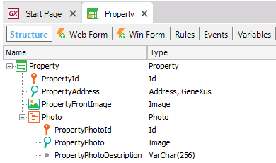
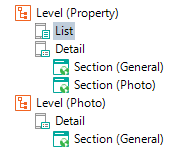
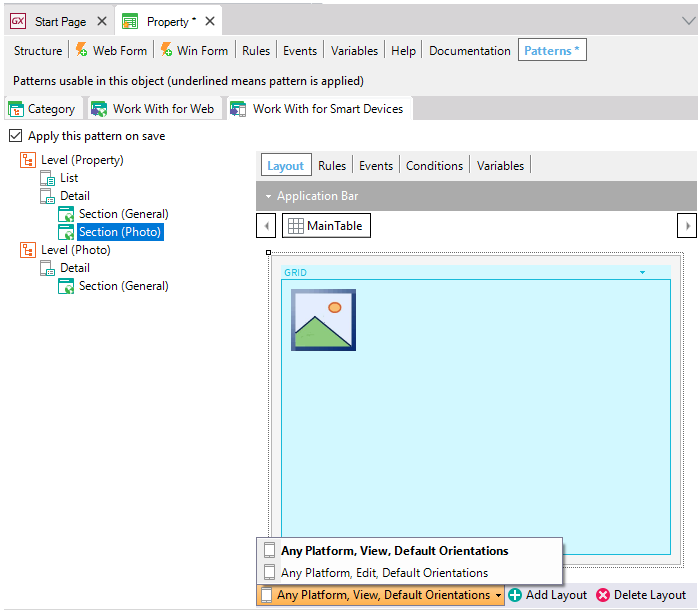

WWSD Pattern instance for Multi-level Transactions
Supposing the following 2-level Property Transaction, with the attributes shown below:  Upon applying theWork With for Smart Devices object, the following instance associated with the Property Transaction is generated:  In this case, when the transaction has more than one level, an additional Level of Detail is generated for each subordinate level in the Transaction. For the Property Transaction of the example a new Section (Photo) is generated, corresponding to the data of the second level in the transaction, with View and Edit nodes, as for Single-level Transactions, to View the data of the second level and to Edit the record selected.  Tip: In the second level of 2-level Transactions, it is shown as a link (a link to view the list of the second level), using Display property with Link value and the related Transactions as Tab (with Tab value). This Level of Detail contains:
Notes
LimitationsInsert method is not supported in multilevel transactions. Videos |

| Backlinks | |
| Category:Work With for Smart Devices object | WWSD Pattern instance for Related Transactions |
| WWSD Pattern instance for Single-level Transactions |